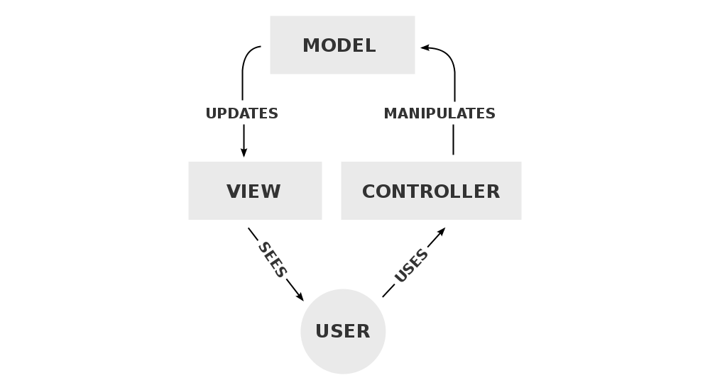

WEEK 8
WHAT IS RAILS?
JANUARY 28, 2016
The short...
Ruby on Rails or simply Rails is a web app framework written in Ruby. In simple terms, it provides a set of default structures for databases, web services, and web pages. I like to think of Rails as like being provided scaffoldings from which to start and build projects.
Brief history
Rails was originally authored by David Heinemeier Hansson while working on a project management tool called Basecamp at a company called Basecamp. Love the naming scheme. Mr. Hansson first released Rails as open source in July of 2014, opened up commit rights in February 2005, and in August 2007 Apple announced that it would ship Rails with Mac OS X "Leopard". The latest release from November 13, 2015 is version 4.2.5.
A bit of technical mumbo jumbo
Rails is model-view-controller (MVC) framework. This means that it splits programming applcaitions into three major components. You can probably guess what those three components are. It's actually pretty cool and interesting.
The model captures and illustrates the behavior of the application independent of the user interface. Its got direct control of data, logic, and rules of the app.
The view is simply the output or visualization of the application to the end-user
The controller, as the name suggests, accepts inputs and commands to be applied to the model or view.
The interactions between the different components is pretty well summed up below.
A controller can send commands to the model to update the model's state (e.g., editing a document). It can also send commands to its associated view to change the view's presentation of the model (e.g., by scrolling through a document). A model stores data that is retrieved according to commands from the controller and displayed in the view. A view generates an output presentation to the user based on changes in the model. A view controller generates an output view and an embedded controller.
Here's a great visual from Wikipedia.
So why use learn and use Rails?
To get hired. Sort of kidding. I read a few articles talking about how great Ruby and Rails are for beginners. They also mentioned that 99% of the time people don't get hired to just write in Ruby alone and so if you're goal in learning Ruby is to find work, then learning Rails is a given.
From what I've read, both Rails and Ruby were designed with best practices in mind and for programming in them to be enjoyable. Rails pretty much guides you into writing good code that'll be easier to maintain. Is that not reason enough? Well, it's also one of the most widely used frameworks as of right now - used by entities like Twitch, Airbnb, and Hulu.
More reading
There's way more to learn about Rails so here's a couple of the resources I used.